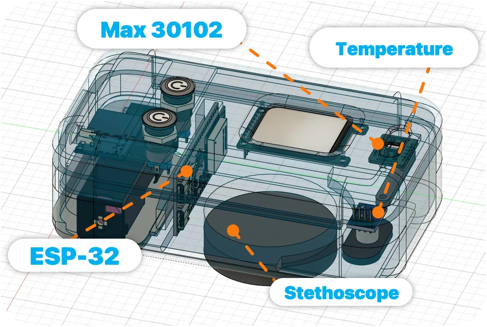
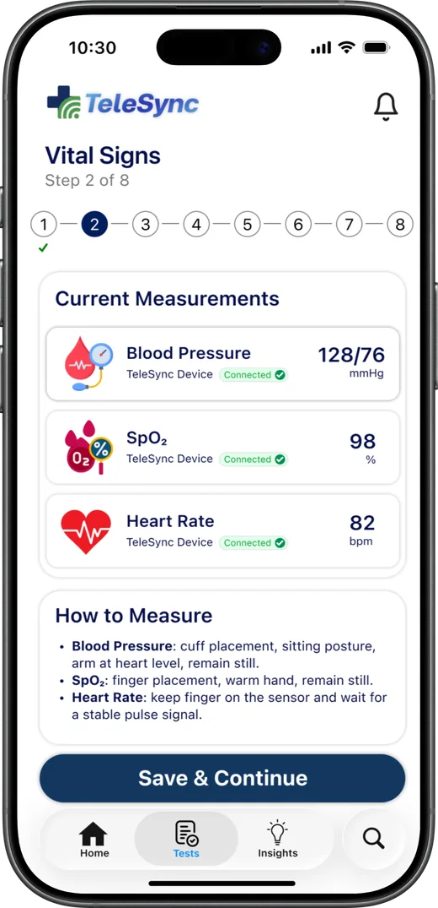
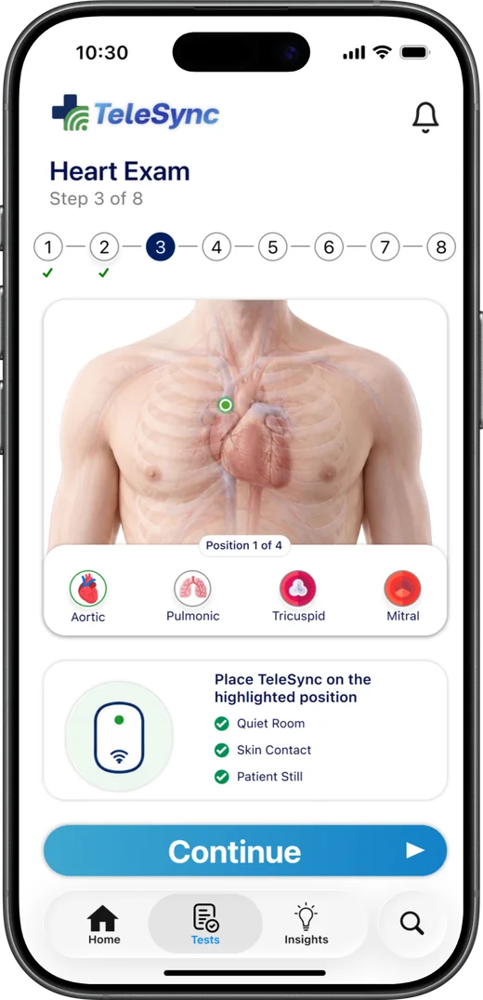
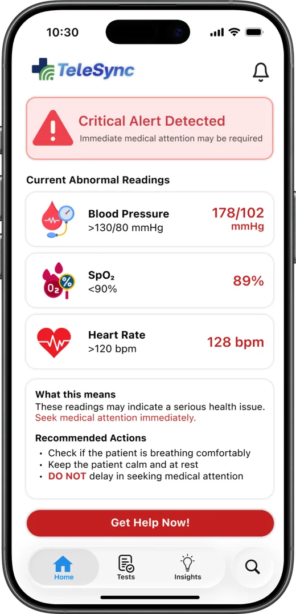
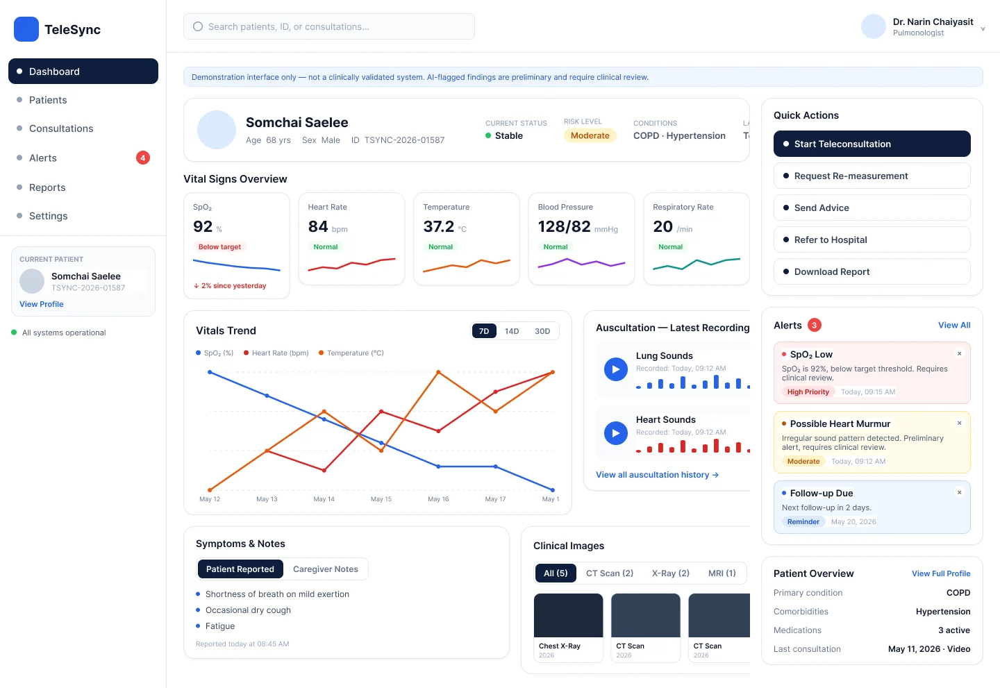

The Solution
A portable examination device, a guided mobile app and an admin dashboard that carry a patient’s examination from home to the hospital.

One device for a bedside check
TeleSync measures heart rate, SpO₂, temperature and blood pressure, and records heart and lung sounds. Readings appear on its built-in screen and are sent to the paired phone.
- Stethoscope headRecords heart and lung sounds
- MAX30102 optical sensorHeart rate and SpO₂
- Temperature sensorBody temperature
- ESP-32 and screenShows readings and sends them to the app
A guided exam anyone can follow
The app walks a patient or caregiver through each step, so no medical training is needed.
- Step-by-step examinationSymptoms, vital signs, then heart sounds at 4 positions and lung sounds at 10, with a contact check on every recording.
- One record for the doctorThe finished exam is sent as a single case, with optional CT, MRI or X-ray files.
- Emergency alertsCritical readings bring up one-tap calls to emergency services or the doctor, and nearby hospitals.
- English and ThaiEvery screen is available in both languages.



Built for doctors and hospital staff
- Patient overviewVital signs, trends and risk level on one screen.
- Listen and reviewPlay back heart and lung recordings and open uploaded files.
- Critical cases firstAbnormal readings are flagged and moved to the top of the list.
- Follow upRequest a re-measurement or start a video consultation.

Connected to government hospitals, privately
The admin dashboard is designed to plug into the information systems government hospitals already use, so exam results land in the patient’s existing record.
API key access
Each hospital is issued its own API key. Only requests signed with a valid key can read or send patient records, and a key can be revoked at any time.
Encrypted end to end
Data is encrypted in transit with TLS and at rest with AES-256, from the phone to the hospital’s system.
Privacy by design
Only a patient’s authorised clinicians can open their record, and personal data is handled under Thailand’s Personal Data Protection Act (PDPA).